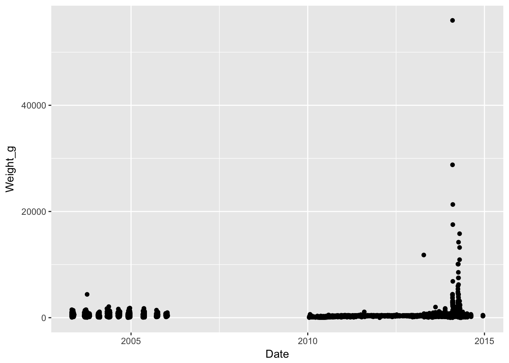
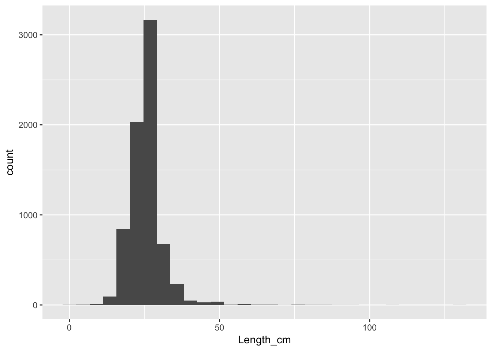

8 Loading Fisheries Data
Next, you’ll load the data you’ll be using for the analysis using the read_csv function. First, create a new folder in your working directory called “_data“. Next, download the following two files onto your computer. Right click on each link, and save it in your”_data" folder.
Right click and save-link-as to download landings data
Right click and save-link-as to download life history data
Next, you’ll load these two csv files into R. First load the landings data which includes catch, effort, and length measurements and store these data to a data frame called landings_data. Next, load the life history parameter data file and store these data to a data frame called life_history_parameters.
landings_data <- read_csv("_data/sample_landings_data.csv")
life_history_parameters <- read_csv("_data/life_history_parameters.csv")Let’s take a quick look at what’s in each of these data frames.
landings_data## # A tibble: 7,214 × 8
## Year Date Trip_ID Effort_Hours Gear Species Length_cm
## <int> <chr> <int> <int> <chr> <chr> <dbl>
## 1 2003 4/30/03 1 10 Trap Caesio cuning 36
## 2 2003 4/30/03 1 10 Trap Caesio cuning 29
## 3 2003 4/30/03 1 10 Trap Caesio cuning 34
## 4 2003 4/30/03 1 10 Trap Caesio cuning 36
## 5 2003 4/30/03 1 10 Trap Caesio cuning 34
## 6 2003 4/30/03 1 10 Trap Caesio cuning 28
## 7 2003 4/30/03 1 10 Trap Caesio cuning 30
## 8 2003 4/30/03 1 10 Trap Caesio cuning 27
## 9 2003 4/30/03 1 10 Trap Caesio cuning 33
## 10 2003 4/30/03 1 10 Trap Caesio cuning 35
## # ... with 7,204 more rows, and 1 more variables: Weight_g <dbl>The landings_data data frame is from a fishery-dependent landing site survey. The species included in this data set is Caesio cuning, a yellowtail fusilier. You can see the data frame has eight columns, with each row being an individual fish catch measurement. The columns include the year and date when the measurement was collected, the fishing trip ID, how many hours were fished for each trip, what gear was used, the species, the length of the fish, and the weight of the fish. We’ll be able to use these data to create length-frequency histograms that describe the size structure of the population, as well as trends in catch and CPUE.
One thing we should do is format the year and date columns to ensure that R knows these represent years and dates as we humans think of them. We can use the mdy and year functions from the lubridate package to do this, combined with the mutate function from the dplyr package. We start by taking the landings data frame we loaded into R, and working through a series of “pipes”, designated by the %>% operation, which progressively analyzes the data from one step to the next. Essentially, the output of one line is fed into the input of the next line.
# Start with the landings data frame
landings_data <- landings_data %>%
# Turn the date column into a date format that R recognizes
mutate(Date = mdy(Date)) %>%
# Conver the gear column to a categorical factor
mutate(Gear = as.factor(Gear)) %>%
# Conver the gear column to a categorical factor
mutate(Species = as.factor(Species))One of the first things you should always do is quickly plot your raw data using ggplot. This can help you familiarize yourself with what’s contained in the data set, as well as look for any potential outliers or errors. We will come back to a more detailed description of plots and visualizations later, but below is some quick code to look at things. When using ggplot, first start with your data frame and initialize the ggplot by specifying the plot’s aesthetics (variables) using aes(). Then use the + operation to add at least one geometry (type of plot, such as a scatter plot) and any additional features to the plot. To learn more about ggplot, the Data Visualization with ggplot2 Cheat Sheet is a very helpful resource, as is this ggplot cookbook.
The first figure just shows a point for every weight measurement over time.
# Start with the landings data frame
landings_data %>%
# Initialize a ggplot of weight measurements versus year
ggplot(aes(x=Date,y=Weight_g)) +
# Tell ggplot that the plot type should be a scatter plot
geom_point()
The second figure shows a histogram of the length data.
# Start with the landings data frame
landings_data %>%
# Initialize ggplot of data using the length column
ggplot(aes(Length_cm)) +
# Tell ggplot that the plot type should be a histogram
geom_histogram()
Let’s next look at the life_history_parameters data frame.
head(life_history_parameters)## # A tibble: 1 × 11
## Species Common L_inf k t0 M Wa
## <chr> <chr> <dbl> <dbl> <dbl> <dbl> <dbl>
## 1 Caesio cuning Yellowtail fusilier 62.2 0.32 -0.42 0.8915981 0.0208
## # ... with 4 more variables: Wb <dbl>, m50 <dbl>, m95 <dbl>, maxAge <int>The life_history_parameters data frame includes several important life history parameters that were found doing a literature review of this species. L_infinity, k, and t0 describe the age-to-length relationship using the von Bertalanffy growth equation. M represents natural mortality. Wa and Wb describe the length-to-weight relationship. m50 and m95 describe the lengths at which 50% and 95% of the fish are mature, respectively. maxAge is the maximum age of the fish.